MEDICINA• INSTRUÇÃO
O médico português fala-lhe dos riscos de tensão arterial elevada na idade avançada
O que é ideal para dissolver as placas de colesterol e melhorar a circulação sanguínea?
 |
Shigeaki Hinohara |

Milhões de pessoas tratam milhares de doenças diferentes com montões de medicamentos diferentes, sem sequer se aperceberem que a raiz do problema não está onde está a dor. O colesterol é invisível, acumula-se silenciosa, lenta e impercetivelmente, sufocando todos os órgãos vitais.
Com a acumulação de colesterol no organismo um aumento em forma de avalanche do risco de doenças associadas à estenose ou ao bloqueio dos vasos sanguíneos.
Quais são os perigos das placas de colesterol?
A acumulação de colesterol nas paredes dos vasos sanguíneos começa ativamente após os 40 anos de idade, e após os 50 passa a um ritmo espantoso. As barreiras de colesterol resultantes prejudicam o fluxo sanguíneo. A placa aterosclerótica forma-se gradualmente, e o diâmetro do vaso torna-se cada vez menor. Isto aumenta muito o risco de um coágulo de sangue bloquear os vasos sanguíneos. Quando isto ocorre, o fluxo de sangue para um órgão é parcial ou completamente cortado, resultando em mau funcionamento grave ou morte.
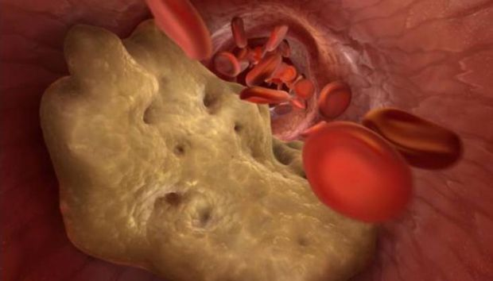
O perigo reside também no curso latente - assintomático - da doença. O estado das embarcações está em constante deterioração, e as anomalias só se manifestarão quando as embarcações já tiverem reduzido para metade o seu tamanho. É impossível saber a manifestação exata da arteriosclerose; tudo depende de que órgão foi privado da nutrição necessária. A aterosclerose afeta mais frequentemente os vasos do coração, intestinos, cérebro, aorta, rins, membros inferiores e pâncreas.
A acumulação de colesterol (aterosclerose) tem um efeito devastador em todos os órgãos e sistemas do corpo. A única questão é qual o órgão que será o "elo mais fraco" e não sobreviverá primeiro.
7 alvos de colesterol
Aterosclerose da aorta
A aterosclerose da aorta refere-se à lesão da maior artéria do corpo. A aorta assemelha-se a um tronco do qual outros vasos mais pequenos se ramificam.
A aorta inclui 2 secções:
- Torácica
- Abdominal
A secção torácica fornece sangue aos órgãos do peito, bem como à cabeça e pescoço.
A aorta abdominal direciona o sangue para órgãos localizados no abdómen e extremidades inferiores.
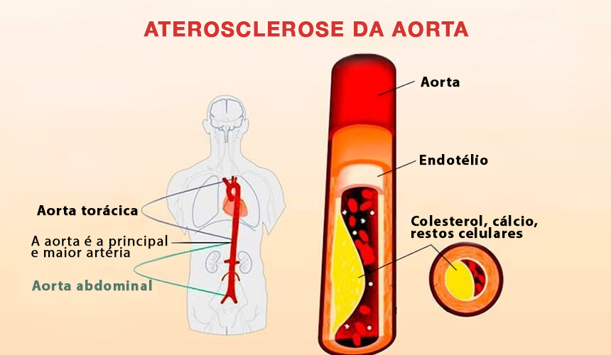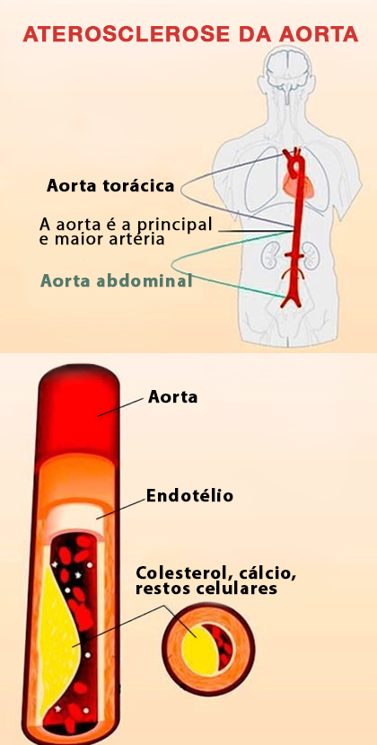
A doença desenvolve-se em 2 fases:
- Na fase inicial, não há manifestações externas da doença. Mas as complicações já existentes podem ser detetadas através de testes laboratoriais.
- O período clínico é acompanhado de sinais pronunciados da doença.
Aterosclerose da aorta torácica
Na fase inicial, a patologia não é acompanhada de quaisquer sintomas. Os primeiros sintomas são geralmente dores no peito, que são periódicas na natureza. A dor pode diminuir, aumentar e não desaparecer durante vários dias. É frequentemente acompanhado por uma sensação de falta de ar.
Outros sintomas incluem um aumento da pressão sanguínea e o desenvolvimento de hipertensão.
Se houver danos significativos no arco aórtico, há dificuldade em engolir e a voz torna-se rouca. As lesões ateroscleróticas da aorta torácica podem ser acompanhadas por crescimento de pelos nas orelhas. O rosto tem uma aparência gorda, ocorre um acinzentamento prematuro.
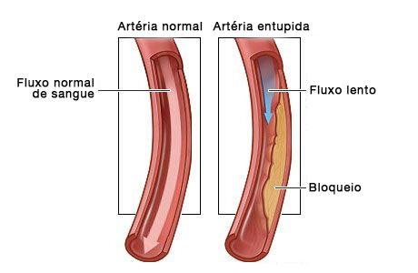
Outros sintomas de uma lesão da aorta torácica incluem:
- Dor que irradia para o braço, coluna cervical e lombar;
- Aumento da pressão sanguínea;
- Batimento entre as costelas do lado direito do peito;
- Ruído na cabeça;
- Tonturas;
- Dor no pescoço ao tentar virar a cabeça.
As seguintes anomalias desenvolvem-se num contexto de fornecimento de sangue insuficiente ao coração:
- arritmia;
- insuficiência cardíaca;
- angina pectoris;
- ataque cardíaco.
A lesão da aorta torácica é frequentemente combinada com lesão aterosclerótica da artéria coronária e danos nos vasos cerebrais.
Aterosclerose da aorta abdominal
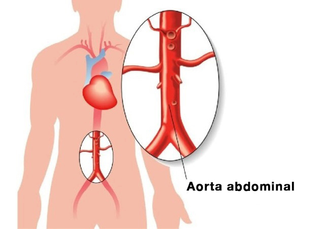
A lesão aterosclerótica da aorta abdominal é acompanhada por perturbações do sistema digestivo e manifesta-se pelos seguintes sintomas:
- Dores abdominais que têm um carácter de ataque. Muitas vezes o paciente não pode especificar exatamente onde se encontra o foco da dor;
- Anomalias nas fezes;
- Meteorismo;
- Queimadura cardíaca;
- Arroto e um sabor a amargura;
- Trombose da artéria visceral. Uma complicação perigosa que pode ser fatal. Acompanhado de necrotização das alças intestinais e inflamação extensa. A condição é acompanhada de dores muito fortes, que não podem ser eliminadas com analgésicos.
Como resultado da formação de placas nesta área, há uma violação do fornecimento de sangue aos órgãos pélvicos. Como complicações que surgem posteriormente, a insuficiência renal, doenças das artérias viscerais podem ser observadas.
Vasos sanguíneos cerebrais
O colesterol, que leva à aterosclerose cerebral, destrói tanto os vasos intracranianos como extracranianos. A intensidade dos sintomas patológicos está diretamente relacionada com a extensão e localização das lesões.
Para além da complicação mais perigosa do AVC, pode-se observar a inibição do sistema nervoso central, o desenvolvimento de perturbações mentais, a deterioração da visão e da memória.

Os primeiros sinais de danos aparecem com a idade de 40-45 anos.
Nesta fase é possível a manifestação de ataques isquémicos acompanhadas por distúrbios de sensibilidade, coordenação, patologias da visão, da audição e da fala. Apesar da gravidade dos sintomas, durante este período são de curta duração, reversíveis e desaparecem por si mesmos após uma única limpeza vascular com nutracêuticos.
Lesões ateroscleróticas graves podem levar a AVC, ou seja, necrose do tecido cerebral. Os sintomas são os mesmos que no caso anterior, mas não há nenhuma melhoria significativa após a necrose.
O cérebro é também responsável pelo desempenho de funções mentais superiores. Portanto, a formação de placas também leva à deterioração da inteligência e da memória, alterações de carácter: alterações de humor, caprichos, preguiça. Na ausência de medidas terapêuticas para libertar os vasos sanguíneos das placas, esta lesão leva ao desenvolvimento da demência, a doença de Alzheimer. Tais complicações são perigosas e podem levar à incapacidade ou à morte.
Existem dois tipos de AVC:
- isquémico;
- hemorrágico.
O AVC já atingiu o limite de idade. Já não está associado à velhice. A isquemia ocorre devido ao bloqueio do leito vascular por um trombo, a causa da hemorragia é uma rotura dos vasos cerebrais.
Coração
Uma das causas de morte em doentes com doença cardiovascular devido a uma acumulação de colesterol nos vasos sanguíneos é uma oclusão da artéria coronária principal.
A doença coronária, angina de peito e enfarte do miocárdio estão associados a esta lesão.
A doença coronária é uma patologia grave do coração que é um complexo de perturbações. Inclui angina, enfarte do miocárdio, e cardiosclerose.
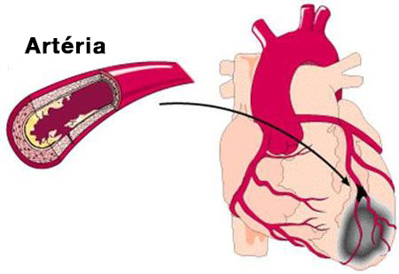
A maior parte das vezes a doença coronária é manifestada pela angina de peito. Na fase inicial, as suas manifestações sob a forma de dor no peito ocorrem apenas durante a atividade física. Isto é lógico, porque em repouso o coração necessita de menos oxigénio para o seu trabalho, e durante a atividade intensiva estas necessidades aumentam. Tal reação pode ser ao stress, à angústia emocional. À medida que a aterosclerose se desenvolve e a sobreposição no diâmetro do leito vascular aumenta, a doença arterial coronária torna-se mais pronunciada. Nas fases posteriores da doença, qualquer movimento do paciente já causa dor.
Os sinais clássicos de angina incluem:
- A aparência de dor tanto sob stress como em repouso;
- a dor é sentida atrás do esterno, pode mover-se para o ombro (esquerda), escápula, braço. Além disso, a intensidade
- está diretamente relacionada com a gravidade do ataque;
- uma dor aguda e esmagadora;
- pode parar o ataque tomando um comprimido de nitroglicerina;
- a duração do ataque será mais curta: não mais do que 5 minutos.
a diferença entre um ataque cardíaco e uma angina
- a dor é muito severa;
- a duração do ataque é de pelo menos 20 minutos;
- A nitroglicerina não é útil para o enfarte do miocárdio;
- a dor é difusa.
Uma placa provocada por níveis elevados de colesterol pode levar à morte súbita do paciente. Esta situação desenvolve-se quando o mau funcionamento do fornecimento de sangue altera primeiro o ritmo cardíaco e depois o coração para.
Todas as doenças cardíacas vasculares são graves e perigosas. sem um coração em pleno funcionamento, outros órgãos não podem funcionar corretamente. A aterosclerose dos vasos do coração também pode levar a enfarte do miocárdio. Um ataque cardíaco é causado quando uma placa se rompe e um coágulo de sangue obstrui o vaso. Como resultado, o sangue deixa de fluir para uma área específica do músculo cardíaco e depois morre.
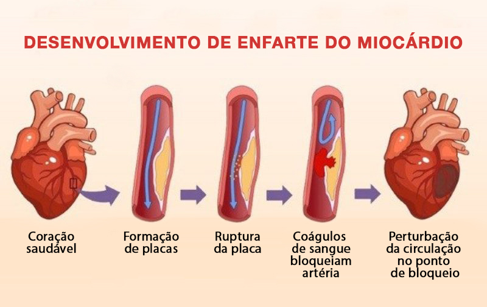
Uma vez desenvolvido o distúrbio de contratilidade do músculo cardíaco, a morte ocorre dentro de poucas horas ou dias. No entanto, mesmo que a pessoa seja salva, ainda tem uma perturbação no fornecimento de sangue que, sem limpar os vasos sanguíneos de colesterol, mais cedo ou mais tarde levará a um segundo ataque. Por conseguinte, a purificação dos vasos sanguíneos por nutracêuticos é vital para os pacientes que tiveram um ataque cardíaco.
Além disso, no contexto de distúrbios circulatórios, desenvolve-se a hipertensão. Isto é acompanhado por disfunção do coração, processos patológicos no sistema nervoso central e rins.
A hipertensão também ocorre no contexto de lesões do cérebro, rins e vasos sanguíneos periféricos. Com a patologia cerebral manifesta-se por perda de consciência, perda de visão e função renal prejudicada, o que leva à insuficiência renal.
Vasos das extremidades inferiores
O complexo de sintomas de lesões das extremidades inferiores que levam a depósitos de colesterol inclui:
- suscetibilidade das extremidades inferiores ao frio;
- cãibras;
- coxeio;
- úlceras tróficas, uma malha vascular e estrelas após lesões cutâneas;
- varizes;
- dor, que pode ocorrer tanto no estado de atividade como em repouso (pode variar em intensidade);
- rutura da cartilagem e desenvolvimento da osteoartrite.
Para além da dor, existem perturbações do sistema músculo-esquelético. Os manifestos são semelhantes às perturbações do coração: na fase inicial, a dor ocorre apenas com grande esforço físico, longas caminhadas. Na fase final, as dores tornam-se intoleráveis, mesmo quando se está em repouso.
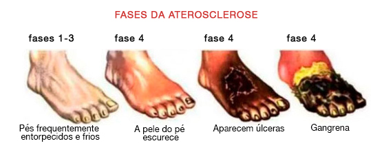
A claudicação intermitente é o principal sintoma das lesões vasculares. As sensações dolorosas estão principalmente localizadas nos músculos da coxa e da barriga da perna.
O fornecimento insuficiente de sangue às extremidades inferiores, causa palidez e dormência da pele, os pelos das pernas começam a cair. As úlceras formadas são extremamente difíceis de tratar, isto deve-se ao facto de os processos regenerativos não serem totalmente ativados devido à falta de fornecimento de sangue. Como resultado de tais mudanças, mais cedo ou mais tarde começa a gangrena: os tecidos morrem. Tomar medicação nesta fase é ineficaz. A gangrena só pode ser curada por amputação.
O tratamento inclui, para além da ingestão de nutracêuticos concebidos para combater a aterosclerose, tratamentos de fisioterapia e spa.
Artérias renais
A lesão aterosclerótica dos vasos que alimentam o rim desenvolve a arteriosidade secundária. Uma manifestação característica é o edema, que se forma como resultado da retenção de sódio no corpo, a situação mais grave é o desenvolvimento de edema pulmonar. Uma das consequências é o enfarte dos rins. Quando o rim é afetado, os sintomas da doença não são pronunciados.
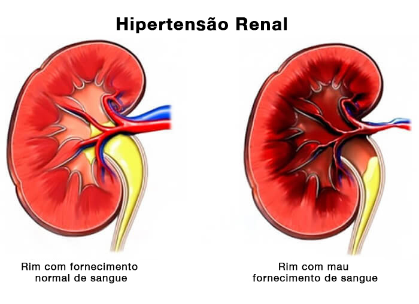
O bloqueio da artéria renal com colesterol leva à formação de insuficiência renal aguda.
Estas são as principais manifestações da aterosclerose das artérias renais:
- hipertensão;
- edema;
- dores lombares localizadas;
- fraqueza, perda de força.
Como ver-se livre de placas ateroscleróticas?
O tratamento é baseado na limpeza sistemática dos vasos sanguíneos. Pelo menos uma vez a cada 5 anos a partir de 40 anos para os homens e de 45 para as mulheres..
Até há pouco tempo era impossível eliminar as placas ateroscleróticas já existentes; a terapia baseava-se em abrandar a formação de novas placas.
Mas tudo isso mudou com a descoberta dos nutracêuticos.
Os remédios modernos contra as placas de colesterol (nutracêuticos) permitem a limpeza dos vasos sanguíneos em casa sem a supervisão de especialistas. O principal é observar a duração do curso do tratamento. A duração efetiva de ingestão de 1,5 meses.
Durante os 1,5 meses de nutracêuticos remover dos vasos, artérias e capilares de 89% a 97% dos depósitos de colesterol. (Cerca de 3,7 kg)
O que são gotas Cardofort?
Gotas Cardiofort São o mais recente classe de produtos para o tratamento e prevenção da aterosclerose vascular.
As gotas de Cardiofort combinam segurança e alta eficácia na luta contra os depósitos de colesterol.
As gotas Cardiofort são aprovadas para autoadministração para o tratamento da arteriosclerose e suas consequências.
As gotas naturais de Cardiofort de todos os nutracêuticos eliminam completamente os efeitos secundários e complicações, pelo que é recomendado para as pessoas de idade avançada e pessoas com doenças crónicas.
Como é que os nutracêuticos trabalham no corpo?
As gotas Cardiofort atuam em 3 fases:
- 1. Eliminação dos depósitos de colesterol. Dissolver placas ateroscleróticas, coágulos de sangue e cal de cálcio. Aumentar o lúmen dos vasos sanguíneos e restaurar a circulação sanguínea.
- 2. Eliminar os efeitos de um fluxo sanguíneo inadequado. Curar completa ou significativamente doenças como hipertensão, dores de cabeça, varizes, diabetes tipo 2, trombose e hemorroidas. O tinido e as tonturas desaparecem, a acuidade visual e a clareza mental melhoram.
- 3. melhoram a força e a elasticidade das paredes dos vasos sanguíneos. Isto evita a formação de novas placas e reduz o risco de AVC em 11 vezes.
Cardiofort

As gotas Cardiofort hoje é um nutracêutico da 5ª geração moderna com um efeito único, que dissolve até 97% dos depósitos de colesterol e duplica o lúmen dos vasos sanguíneos, restaurando a circulação sanguínea.
A ação baseia-se na capacidade das moléculas de substâncias ativas penetrarem em placas ateroscleróticas através do revestimento fibroso. Este efeito assegura a dissolução dos depósitos de colesterol, o que não era possível até recentemente.
Tomar Cardiofort durante 2 meses, 2 vezes por dia antes de comer fornece os seguintes resultados:
- Elimina até 97% das placas ateroscleróticas.
- Fortalece as paredes dos vasos sanguíneos.
- Normaliza a pressão sanguínea.
- Estabiliza os níveis de açúcar no sangue.
- Restabelece a atividade funcional do cérebro e do sistema nervoso.
- Interrompe o processo de envelhecimento do músculo cardíaco.
- Reduz o risco de enfarte do miocárdio.
- Aumenta a barreira antioxidante.
- Melhora a circulação coronária e cerebral.
- Normaliza o metabolismo mineral no músculo cardíaco.
Dê uma olhadela por si mesmo
As gotas Cardiofort
Paciente
Mulher, 67 anos. No início da terapia, havia lesões extensas da aorta torácica e abdominal com depósitos de colesterol. Perturbações circulatórias dos órgãos abdominais, pulmões e brônquios.
Mulher, 67 anos. No início da terapia, havia lesões extensas da aorta torácica e abdominal com depósitos de colesterol. Perturbações circulatórias dos órgãos abdominais, pulmões e brônquios.
Complicações associadas:
Hipertensão de grau III, edema das extremidades inferiores, varizes, arritmia, condição pré-diabética.
Hipertensão de grau III, edema das extremidades inferiores, varizes, arritmia, condição pré-diabética.
Queixas da doente:
Dores de cabeça, tonturas, zumbidos, dores e cólicas nas pernas, problemas de sono, tensão arterial até à crise hipertensiva.
Dores de cabeça, tonturas, zumbidos, dores e cólicas nas pernas, problemas de sono, tensão arterial até à crise hipertensiva.
Prescrição:
Gotas Cardiofort. 30 gotas com um copo de água após as refeições duas vezes por dia. Visita de acompanhamento após 30 dias e após 60 dias.
Gotas Cardiofort. 30 gotas com um copo de água após as refeições duas vezes por dia. Visita de acompanhamento após 30 dias e após 60 dias.
Angiograma vascular geral da paciente
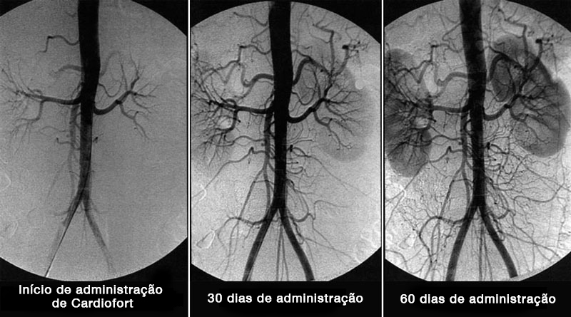
Resultados do tratamento
De acordo com os resultados de 2 meses de terapia com Gotas Cardiofort, Foram obtidos os seguintes resultados
- A tensão arterial voltou ao normal 130-139 \ 85-89, o que é um limite extremo do normal.
- Não há edema.
- Os níveis de açúcar não excedem 5,5 mmol/L.
- Não se observam manifestações de veias varicosas.
- A arritmia não é monitorizada, pulso 73 batimentos/min.
- As dores de cabeça e o zumbido não se incomodam após a primeira semana de consumo do remédio.
- Sono normalizado.
- Aumento da acuidade visual.
- O tom geral e o bem-estar melhoraram muito.
A circulação do cérebro foi restaurada
Paciente
Homem, 51 anos. No início do tratamento, houve uma obstrução significativa da circulação cerebral.
Homem, 51 anos. No início do tratamento, houve uma obstrução significativa da circulação cerebral.
Complicações associadas:
Tensão arterial elevada, opacidade corneana, osteocondrose cervical e torácica, prostatite crónica, hemorroidas agudas, hiperglicemia.
Tensão arterial elevada, opacidade corneana, osteocondrose cervical e torácica, prostatite crónica, hemorroidas agudas, hiperglicemia.
Queixa do paciente: dores de cabeça.
Dores de cabeça, visão desfocada. Fraqueza geral e apatia, indisponibilidade para fazer qualquer coisa. Baixa eficiência, incapacidade de concentração durante longos períodos de tempo, falta de energia.
Dores de cabeça, visão desfocada. Fraqueza geral e apatia, indisponibilidade para fazer qualquer coisa. Baixa eficiência, incapacidade de concentração durante longos períodos de tempo, falta de energia.
Prescrição:
Gotas Cardiofort. 30 gotas com um copo de agua após as refeições duaz vezes por dia. Visita de acompanhamento após 30 dias e 60 dias.
Gotas Cardiofort. 30 gotas com um copo de agua após as refeições duaz vezes por dia. Visita de acompanhamento após 30 dias e 60 dias.
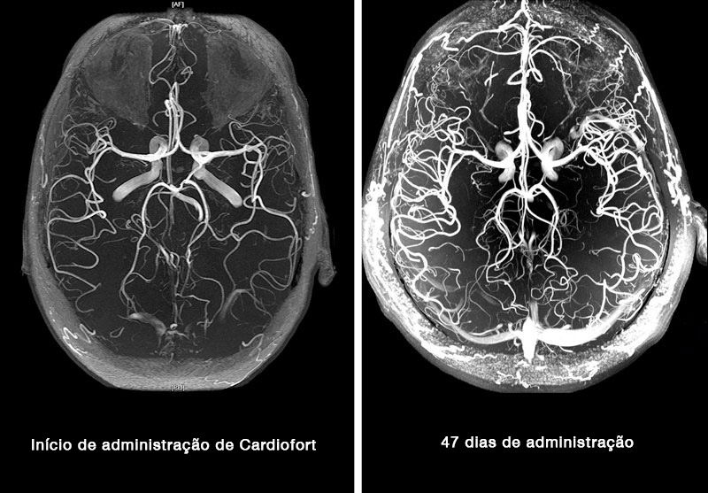
Resultados do tratamento
1,5 meses de tratamento com gotas de Cardiofort deram os seguintes resultados:
- Pressão sanguínea completamente normal.
- Níveis de açúcar estabilizados.
- As dores de cabeça desapareceram.
- Aumento da eficiência e da atividade.
- A energia aumentou significativamente.
- As hemorroidas desapareceram.
- Sem dores nas costas, pescoço e articulações.
- Aumento da acuidade visual.
- Sem sintomas de prostatite.
A desvantagem significativa do Cardiofort
A única e, de facto, a principal desvantagem do nutracêutico Cardiofort é o seu preço.
Isto é lógico porque os nutracêuticos são os últimos medicamentos com elevados custos de produção. A formulação natural é muito exigente em termos de condições de armazenamento e processamento, o que aumenta significativamente o custo de produção.
Na maioria das farmácias de cadeia Cardiofort simplesmente não está disponível pelo seu preço. E os médicos não correm o risco de receitar um medicamento tão caro.
Uma vez por ano, o fabricante de Cardiofort juntamente com a Comissão Internacional do Colesterol organiza Dia da promoção . Todas as pessoas que precisam de limpar os seus vasos sanguíneos e reduzir o seu nível de açúcar no sangue e a pressão podem receber Cardiofort a um preço com desconto.
Lembre-se desta data:
- Este é o dia internacional de luta contra o colesterol.
Neste dia, pode encomendar quedas Cardiofort a um preço com desconto, mas para o fazer precisa de satisfazer algumas condições.
Condições para 50% de DESCONTO sobre Cardiofort:
- Apenas para uso pessoal.
Isto para que não tenha de lidar com intermediários que tentam comprar o produto a granel e revendê-lo pelas suas próprias razões. - Candidate-se através do site oficial.
Comprar através do site oficial é garantia de qualidade e proteção contra revendedores.
Por isso não demore, encomende Cardiofort agora mesmo. Porque no dia seguinte não poderá comprar o produto a um preço com desconto.
OPINIÕES